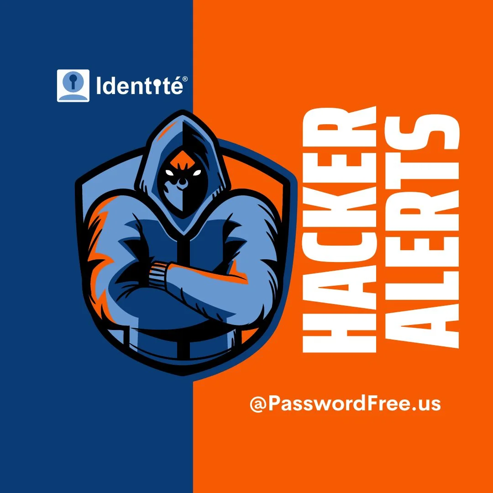

Identité® Hacker Alerts 2022 - Stay up-to-date on the latest phishing attacks, data breaches, and other cyber-attacks @PasswordFree.us

October 2022
Hackers Release Data Stolen From Los Angeles Schools in Ransomware Attack
Hackers who broke into computer systems at the Los Angeles public school system released some illegally obtained data over the weekend after the superintendent refused to pay a ransom. The district, whose more than 600,000 students make it the second-largest in the country after New York City, is working with the FBI and CISA.
Third-party Hacks Put Patient Data at Risk
Healthcare providers Humana Inc. and Elevance Inc., formerly known as Anthem Inc., have disclosed that information about thousands of patients is at risk after a database at imaging company Choice Health was accessible online. Humana told Maine privacy regulators that 22,767 individuals were affected. At Elevance, it is 13,406.
Seattle Children's Hospital is notifying 6,750 patients their data was exposed in a June hack at Kaye-Smith, which provides mailing services to the hospital. Contact information as well as financial and some clinical data were compromised. (Becker's Hospital Review)
September 2022
17-Year-Old Suspect Hacker Arrested for Uber and Rockstar Games cybercrimes. Police on Friday arrested a 17-year-old teenager from Oxfordshire, London on suspicion of hacking. The arrest was made as part of an investigation in partnership with the U.K. National Crime Agency. It's suspected that the law enforcement action may have something to do with the recent string of high-profile hacks involving Rockstar Games and Uber. Both attacks are alleged to have been committed by the same threat actor Tea Pot aka teapotuberhacker. Uber is pinning the breach on the LAPSUS$ extortion gang, two of whom are facing fraud charges. According to Flashpoint, a cybersecurity company, the real-world identity of the hacker behind the two incidents was outed on an underground forum that claimed that the teapotuberhacker had allegedly hacked Microsoft and 'owned' Doxbin. This also means that the teapotuberhacker actor is likely the same party who is also known by the aliases White, Breachbase, and WhiteDoxbin and is believed to be "LAPSUS$'s ringleader. It's not clear if these allegations hold water, but if true, would explain the latest arrest.
GitHub: Hackers Using Fake CircleCI Notifications to Hack GitHub Accounts. GitHub put out an advisory about the phishing campaign targeting its users to steal credentials and two-factor authentication (2FA) codes. They are prompting users to sign in to their GitHub accounts to accept the company's new Terms of Use and Privacy Policy by following an embedded link. The attacker has been spotted downloading private repository contents, and even creating and adding new GitHub accounts should the compromised account have organization management permissions. GitHub said it has taken steps to reset passwords and remove maliciously-added credentials for impacted users, alongside notifying those affected and suspending the actor-controlled accounts. They did not disclose the scale of the attack.
American Airlines: The personal data of American Airlines customers have been accessed by hackers after they broke into employee email accounts, the information accessed could have included customers' date of birth, driver's license, passport numbers, and even medical information, according to the airline.
Kiwi Farms: Notorious trolling and doxing website Kiwi Farms – known for its vicious harassment campaigns that target trans people and non-binary people – has been hacked. According to site owner Josh Moon, whose administrator account was accessed, all users should “assume your password for the Kiwi Farms has been stolen”, “assume your email has been leaked”, as well as “any IP you've used on your Kiwi Farms account in the last month”.
Revolut: Revolut has suffered a cyberattack that facilitated an unauthorized third party accessing personal information pertaining to tens of thousands of the app's clients. 50,150 customers have reportedly been impacted. The State Data Protection Inspectorate in Lithuania, where Revolut holds a banking license, said that email addresses, full names, postal addresses, phone numbers, limited payment card data, and account data were likely exposed.
Rockstar: Games company Rockstar, the developer responsible for the Grand Theft Auto series, was the victim of a hack that saw footage of its unreleased Grand Theft Auto VI game leaked by the hacker. In addition, the hacker also claims to have the game's source code and is purportedly trying to sell it. The breach is thought to have been caused through social engineering, with the hacker gaining access to an employee's Slack account. The hacker also claims to be responsible for the Uber attack earlier in the month. Rockstar said: “We recently suffered a network intrusion in which an unauthorized third party illegally accessed and downloaded confidential information from our systems, including early development footage for the next Grand Theft Auto.”
Uber: Uber's computer network has been breached, with several engineering and comms systems taken offline as the company investigates how the hack took place. Dubbed a “total compromise” by one researcher, email, cloud storage, and code repositories have already been sent to security firms and The New York Times by the perpetrator. Uber employees found out their systems had been breached after the hacker broke into a staff member's slack account and sent out messages confirming they'd successfully compromised their network. Although this breach actually took place way back in 2016 and was first revealed in November 2017, it took Uber until July 2022 to finally admit it had covered up an enormous data breach that impacted 57 million users and even paid $100,000 to the hackers just to ensure it wasn't made public. The case will see Uber's former chief security officer, Joe Sullivan, stand trial for the breach – the first instance of an executive being brought to the dock for charges related to a data breach.
LastPass: Hackers Had Access to LastPass Development Systems for Four Days. The investigation found the attacker exploited a “compromised endpoint” meaning they hijacked access to a LastPass developer's computer, possibly through malware. “While the method used for the initial endpoint compromise is inconclusive, the threat actor utilized their persistent access to impersonate the developer once the developer had successfully authenticated using multi-factor authentication,” LastPass says.
Fishpig: Ecommerce software developer Fishpig, which over 200,000 websites currently use, has informed customers that a distribution server breach has allowed threat actors to backdoor a number of customer systems. “We are quite used to seeing automated exploits of applications and perhaps that is how the attackers initially gained access to our system” lead developer Ben Tideswell said of the incident.
North Face: Approximately 200,000 North Face accounts have been compromised in a credential stuffing attack on the company's website. These accounts included full names purchase histories, billing addresses, shipping addresses, phone numbers, account holders' genders, and XPLR Pass reward records. No credit card information is stored on site. All account passwords have been reset, and account holders have been advised to change their passwords on other sites where they have used the same password credentials.
IHG/Holiday Inn: IHG released a statement saying they became aware of “unauthorized access” to its systems. The company is assessing the “nature, extent and impact of the incident”, with the full extent of the breach yet to be made clear.
TikTok: Rumours started circulating that TikTok had been breached after a Twitter user claimed to have stolen the social media site's internal backend source code. However, after inspecting the code, a number of security experts have dubbed the evidence “inconclusive”, including haveibeenpwned.com's Troy Hunt. Users commenting on YCombinator's Hacker News, on the other hand, suggested the data is from some sort of e-commerce application that integrates with TikTok. The security team determined that the code in question is completely unrelated to Tik Tok's backend source code.
Samsung: Samsung announced that they'd fallen victim to a “cybersecurity incident” when an unauthorized party gained access to their systems in July. In August, they learned some personal information was impacted, including names, contact information, demographics, birth dates, and product registration information. Samsung is contacting everyone whose data was compromised during the breach via email.
August 2022
Nelnet Servicing: Personal information pertaining to 2.5 million people who took out student loans with the Oklahoma Student Loan Authority (OSLA) and/or Ed Financial has been exposed after threat actors breached Nelnet Servicing systems. The systems were compromised in June and the unauthorized party remained on the network until late July.
DoorDash: They became aware that a third-party vendor was the target of a sophisticated phishing campaign and that certain personal information maintained by DoorDash was affected. The information accessed by the unauthorized party primarily included the names, email addresses, delivery addresses, phone numbers, and partial payment card information (i.e., the card type and last four digits of the card number) of a number of DoorDash customers.
Plex: a media streaming platform enforced a password reset on all user accounts after they detected suspicious activity on one of its databases. Reports suggest that usernames, emails, and encrypted passwords were accessed.
Cisco: Multinational technology conglomerate Cisco confirmed that Yanluowang ransomware breached its corporate network after the group published data stolen during the breach online. Security experts have suggested the data is not of “great importance or sensitivity”, and that the threat actors may instead be looking for credibility.
Twilio: confirmed that data pertaining to 125 customers were accessed by hackers after they tricked company employees into handing over their login credentials by masquerading as IT department workers.
July 2022
Twitter: reported that they suffered a data breach concerning phone numbers and email addresses attached to 5.4 million accounts. The vulnerability that facilitated the breach was discovered by Twitter and was patched in mid-January, 2022.
Neopets: On this date, a hacker going by the alias “TarTaX” put the source code and database for the popular game Neopet’s website up for sale on an online forum. The database contained account information for 69 million users, including names, email addresses, zip codes, genders, and dates of birth.
Cleartrip: A travel booking company that's popular in India and majority-owned by Walmart confirmed its systems had been breached after hackers claimed to have posted its data on an invite-only dark web forum. The full extent of the data captured from the company’s internal servers is unknown.
Infinity Rehab and Avamere Health Services: The Department of Health and Human Services was notified by Infinity Rehab that 183,254 patients had had their personal data stolen. At the same time, Avamere Health Services informed the HHS that 197,730 patients had suffered a similar fate. Information stolen included names, addresses, driver’s license information, and more. On August 16, Washington’s MultiCare revealed that 18,165 more patients were affected in the same breach.
Marriott: the hotel giant confirmed its second high-profile data breach of recent years had taken place in June after a hacking group tricked an employee and subsequently gained computer access. The group claimed to be in possession of 20 GB of data stolen from the BWI Airport Marriott’s server in Maryland. Marriott notified 300-400 individuals regarding the breach.
June 2022
OpenSea: Lost $1.7 million of NFTs in February to phishers after an employee of Customer.io, the company’s email delivery vendor, misused their employee access to download and share email addresses provided by OpenSea users with an unauthorized external party. The company said that anyone with an email account they shared with OpenSea should assume that they are affected.
Flagstar Bank: 1.5 million customers were reportedly affected in a data breach that was first noticed by the company in June 2022. Flagstar bank sent letters to the affected customers to notify them even though they had no evidence that any of the information had been misused. Nevertheless, out of an abundance of caution, they wanted to make the customers aware of the incident.
Baptist Medical Center and Resolute Health Hospital: Both health organizations disclosed that a data breach had taken place between March 31 and April 24. Data lifted from its systems by an “unauthorized third party” included the social security numbers, insurance information, and full names of patients.
May 2022
Choice Health Insurance: Notified customers of a data breach caused by “human error” after it realized an unauthorized individual was offering to make data owned by Choice Health available online that consisted of 600MB of data with 2,141,006 files.
Verizon: A hacker was able to infiltrate the system after convincing an employee to give them remote access in a social engineering scam. They got their hands on a database full of names, email addresses, and phone numbers of a large number of Verizon employees.
Texas Department of Transportation: Personal records belonging to over 7,000 individuals had been acquired by someone who hacked the Texas Dept. for Transportation.
Alameda Health System: They notified the Department of Health and Human Services that around 90,000 individuals had been affected by a data breach after suspicious activity was detected on some employee email accounts, which was later found to be an unauthorized third party.
National Registration Department of Malaysia: A group of hackers claimed to hold the personal details of 22.5 million Malaysians stolen from myIDENTITI API, a database that lets government agencies like the National Registration Department access information about Malaysian citizens. The hackers were looking for $10,000 worth of Bitcoin for the data.
Costa Rican Government: Was forced to declare a state of emergency when hacked by the Conti ransomware gang. Conti members breached the government's systems, stole highly valuable data, and demanded $20 million in payment to avoid 670GB of data being leaked that was posted to a leak site.
SuperVPN, GeckoVPN, and ChatVPN: A breach involving a number of widely used VPN companies led to 21 million users having their information leaked on the dark web, Full names, usernames, country names, billing details, email addresses, and randomly generated passwords strings were among the information available.
April 2022
Cash App Data: A breach affecting 8.2 million customers including customer names and brokerage account numbers among the information taken, was confirmed by parent company Block via a report to the US Securities and Exchange Commission. The breach actually occurred in December 2021.
March 2022
US Department of Education: It was revealed that 820,000 students in New York had their data stolen which included demographic data, academic information, and economic profiles. Chancellor David Banks blamed software company Illuminate Education for the incident.
Texas Department of Insurance: The state agency confirmed that it had become aware of a “data security event” which had been ongoing for around three years. “Types of information that may have been accessible”, the TDI said in a statement in March, included “names, addresses, dates of birth, phone numbers, parts or all of Social Security numbers, and information about injuries and workers’ compensation claims. 1.8 million Texans are thought to have been affected.
Shields Health Care Group: Was the victim of a data breach that affected 2,000,000 people across the United States, and information such as Social Security numbers, Patient IDs, home addresses, and information about medical treatments was stolen. A class action lawsuit was filed against the company shortly after.
February 2022
Nvidia Data: Chipmaker Nvidia confirmed in late February that it was investigating a potential cyber attack, which was subsequently confirmed in early March. In the breach, information relating to more than 71,000 employees was leaked. Hacking group Lapsus$ claimed responsibility for the intrusion into Nvidia’s systems.
Morgan Stanley Client: US investment bank Morgan Stanley disclosed that a number of clients had their accounts breached in a Vishing (voice phishing) attack in which the attacker claimed to be a representative of the bank in order to breach accounts and initiate payments to their own account. This was, however, not the fault of Morgan Stanley, who confirmed its systems “remained secure”.
January 2022
Crypto.com: made the headlines after a data breach led to funds being lifted from 483 accounts. Roughly $30 million is thought to have been stolen, despite Crypto.com initially suggesting no customer funds had been lost.
Red Cross: reported that the data of more than 515,000 people, some of whom were fleeing from war zones, had been seized by hackers via a complex cyber attack. The data was lifted from at least 60 Red Cross and Red Crescent societies across the globe via a third-party company that the organization uses to store data.
Flexbooker: Data breach tracking site HaveIBeenPwned.com revealed on Twitter that 3.7 million accounts had been breached in the month prior. Flexbooker only confirmed that customer names, phone numbers, and addresses were stolen, but HaveIBeenPwned.com said “partial credit card data” was also included. Interestingly, 69% of the accounts were already in the website’s database, presumably from previous breaches.